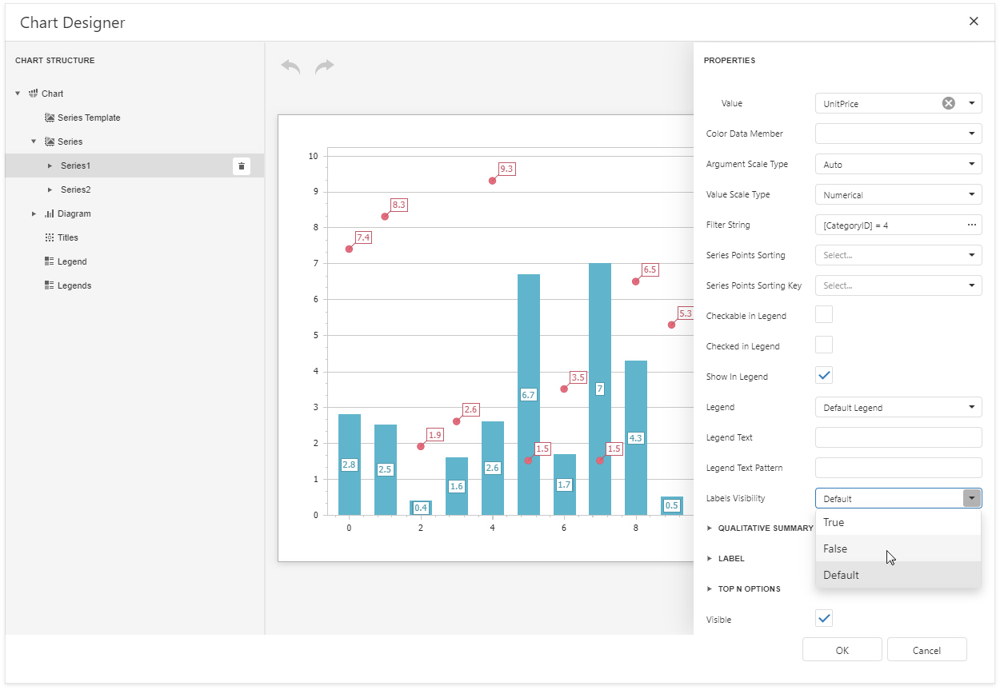

Add a Chart (Set Up Series Manually)
This document demonstrates how to add a chart to a report, provide data for chart series, and set up chart elements. This topic shows two chart series based on the same data source. You can use different data sources for different series.

Add a Chart to a Report
Drop the Chart control from the Toolbox onto the Detail band.

Click Run Designer.

Specify the Data Source and Data Member properties to bind the chart to data.

Note
Ensure that the report's Data Source property is set to None when you place a chart into the Detail band. Otherwise, the chart is repeated as many times as there are records in the report's data source.
Add Series to the Chart
Locate Series in the chart elements tree and click the plus button. Select the series type (for example, Bar) from the invoked list.
Populate the created series with points. Specify the Argument Data Member and Value properties.

Filter series data. Click the Filter String property's ellipsis button. Construct filter criteria in the invoked FilterString Editor and click OK.

Create another series with the same settings. Select the Point view type for this series.
Customize the Chart
Improve the chart's appearance:
Remove the chart legend, because the chart series are bound to the same data. Select Legend in the chart elements tree and set the Visibility property to False.

Hide point labels. Select Series1 and set the Labels Visibility property to False.

Customize the Series2 markers' appearance. Select Series2 and expand the View/Point Marker Options categories. Set Size to 12 and Kind to InvertedTriangle to replace the default circle with an upside down triangle.

Customize the chart's appearance settings. For instance, set chart elements' colors.
View the Result
Switch to Print Preview to preview your report.